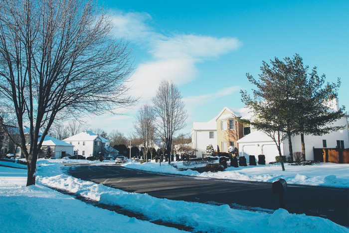
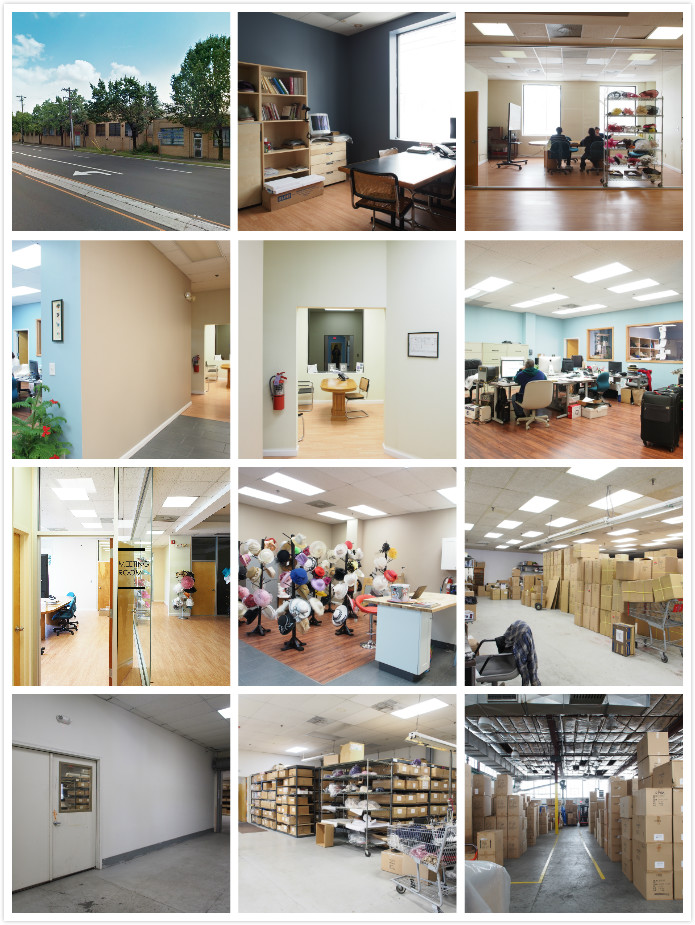
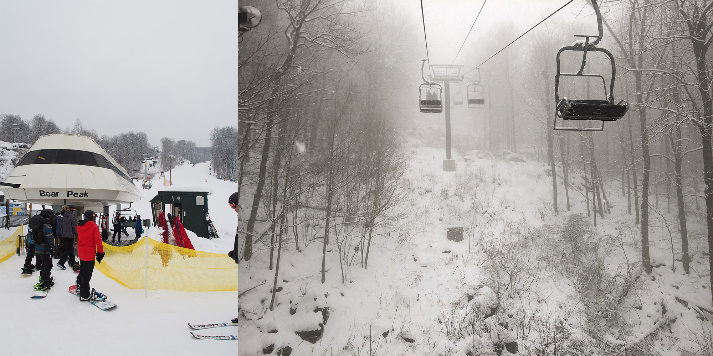

差旅14days
January 18, 2015 | 美國紐澤西

要去美國出差兩個禮拜，也太讓人緊張興奮了!
感謝老闆給我這個難得機會，也去開開眼界呀。
話說一月的紐澤西真的好冷，平均溫度大概是0°，最冷到-10°C
從亞熱帶氣候的台灣過去，整個人彷彿結冰了一樣!
這次也實現了很多第一次，
第一次到美國...
第一次滑雪..
第一次去聽交響樂...
第一次坐20小時的飛機...

關於美國公司與工作， 新的warehouse從Newark搬到Cranford，有更大的空間及倉庫， 目前裝修進度已經達85%，整個廠區有倉庫、手工生產部門、辦公室、會議室、展示間等.... 業務辦公室是半開放的空間，一旁餐飲區中島就是我這半個月的特別座位了!
這次出差的任務，除了平時的設計工作，可以跟美國同事無時差面對面討論， 還有對warehouse的整體視覺規劃，如:招牌、海報、空間標示、佈置...等。 先對整個廠區拍照，蒐集資料發想，因為時間不多無法參與到實際執行， 會先根據需求先做出簡單的提案。
來到NJ的隔天(星期六)，
跟老闆一家人去滑雪，搭上ski lift越爬越高，心跳也跟著加速...
滑雪開始，起初根本是用摔的滾的阿...一度害怕覺得下不去要被困住了，
好在最後到green line，總算找回控制 順利滑行， 回到地面的感覺 真 。好。
星期日在社區走走，沒雪沒雨還有藍天，真是拍照的好天氣，
跟前兩天大雪覆蓋一切的景象完全不同，說是稍稍回溫，
4°C左右，我仍然是全副武裝呀!
下午先去公司，離開時間還早，順便繞去附近看看。
隔著運河遠眺對岸的Manhattan，有種不真實的感覺
回台灣的前兩天，也就是 最後一個周末，
我們來到車程約40分鐘的The Mall At Short Hills
逛街 順便觀摩精心佈置的展示與櫥窗。
半個月的出差微旅行，在20個小時的飛行回到台灣劃下句點。